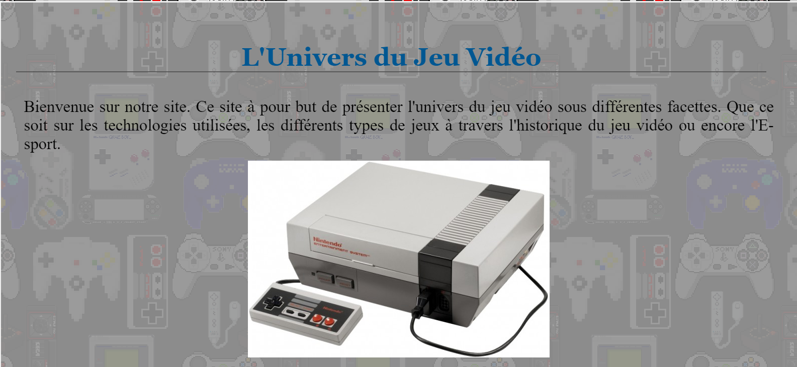
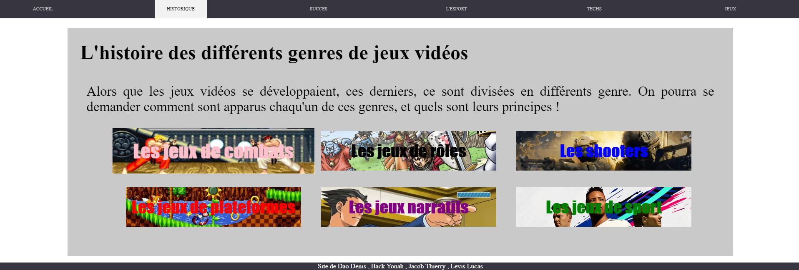
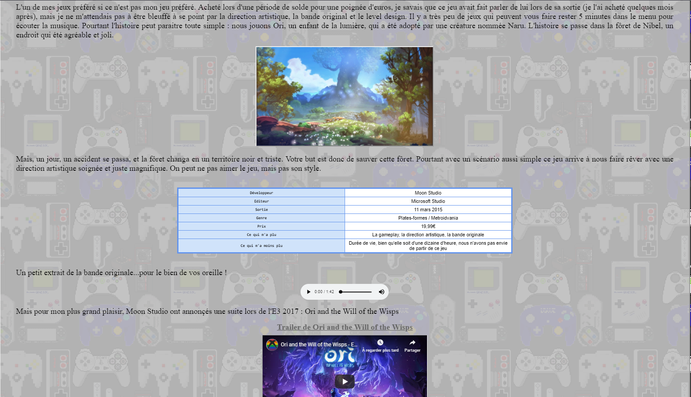
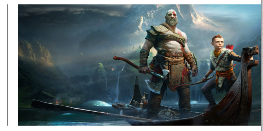
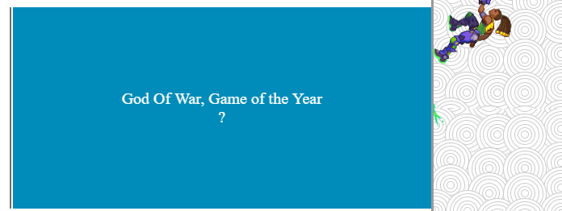

JACOBS Thierry, BACK Yonah, DAO Denis, LEVIS Lucas
Ce projet a de réaliser un site web mettant en avant le jeu vidéo sous plusieurs formes (technologiques, historique, ...).

La page historique, avec plusieurs boutons dynamiques au contact de la souris, ici le boutons"Les jeux de combats"

Cette page montre plusieurs possibilités : inserer une image, un tableau, une musique ou encore une vidéo.

Une image normal en apparence...

...qui revèle un texte quand la souris passe dessus (avec une petite gif qui parcous la page sur les côtés ! )